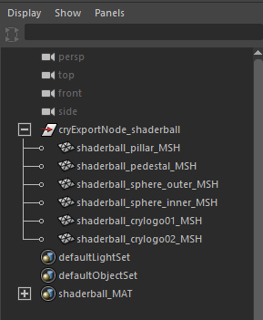
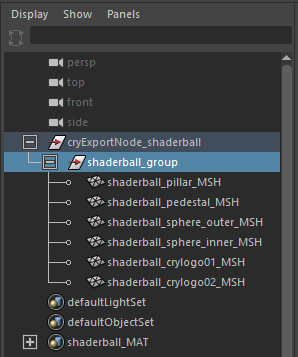
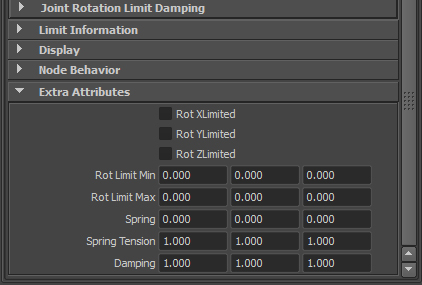
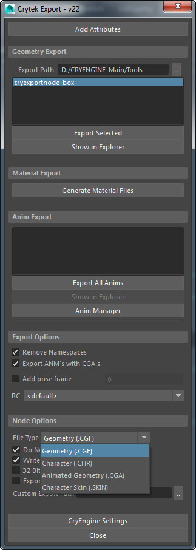
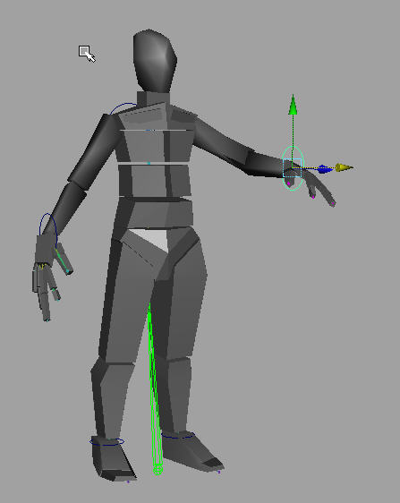
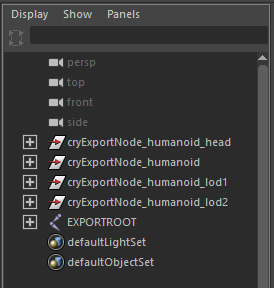
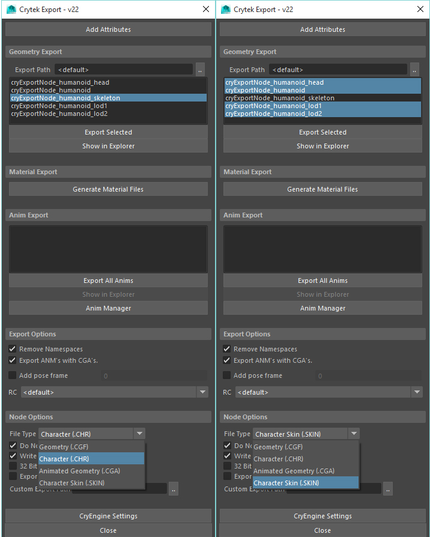

Обзор
В этом разделе описывается общий обзор процесса экспорта. из Maya в CRYENGINE с помощью Криинструменты которые доступны.
Maya Экспорт объекта
Самое важное, что следует учитывать при подготовке к экспорту, — это соглашения об именах. Если описанные объекты названы неправильно, то экспортер работать не будет. Кроме того, поскольку положение верхней оси в Maya отличается от положения CRYENGINE, экспортер компенсирует это, поменяв значения соответствующим образом.
Чтобы экспортировать объект из Maya:
- Создайте группу под названием cryexportnode_@, и замените '@' с именем файла, который вы хотите экспортировать.
Рис1: Правильное название объекта
- Создайте группу под криэкспортнод, и назовите новую группу '#_group'где вы можете заменить '#' с названием модели, которую вы хотите экспортировать.
- Теперь сгруппируйте сетки в группу, которую вы только что назвали '#_group'.
Рис2: Создание группы
Нажмите кнопку Экспорт кнопка на Крайтек панель инструментов, чтобы открыть Крайтек Экспорт диалоговое окно, а затем нажмите кнопку Добавить атрибуты кнопка. Нажав на нее, вы добавите к шейдерам различные параметры, такие как соединения и сетки.
Рис.3: Добавлены атрибуты

Выберите группу «cryexportnode».
Выберите тип файла из раскрывающегося меню, которое появляется в Параметры узла раздел. Вы также можете найти это раскрывающееся меню в Дополнительные атрибуты раздел в редакторе атрибутов Maya.
Убедитесь, что вы выбрали узел Родительского дерева (в нашем случае cryexportnode_@), чтобы включить параметры свойств в разделе «Параметры узла».
Рис.4: Окно экспорта.

Нажмите кнопку Экспорт Выбрано кнопка на Крайтек Экспорт окно.
Пример сцены Maya с настройкой иерархии для экспорта геометрии static можно скачать здесь: statictest.mb.
Maya Экспорт костей
Имея под рукой модель персонажа, вы должны быть готовы к ее оснащению. В этом уроке мы будем использовать стандартную фигуру гуманоида.
Чтобы экспортировать костную структуру из Maya:
1. Привяжите физикализованную сетку к суставам, как показано ниже. Вы также можете создать его, отрегулировав самые простые полигоны, окружающие ваш скелет. После завершения убедитесь, что вы заблокировали свой скелет и связали эти новые физические прокси со скелетом.
Учитывая, что Maya не допускает пробелов в именах, вы можете использовать в качестве пробела знак подчеркивания double (__), таким образом RC преобразует его автоматически при экспорте символа.
Рис5: Модель персонажа в Maya. 
- Создайте группу под названием 'cryexportnode_@', и замените '@' с именем файла, который вы хотите экспортировать.
- Создайте группу под 'криэкспортнод', и сгруппируйте кости к криэкспортнод.
- Теперь создайте группу и назовите ее '#_group', и замените # с именем сетки для экспорта.
- Сгруппируйте узел, который мы создали на предыдущем шаге, в криэкспортнод.
- Теперь свяжите все кожа геометрия скелета.
Рис.6: Геометрия скина, привязанная к скелету.
Убедитесь, что вы связали кожу и кости так, чтобы при анимации сустава кожа анимировалась относительно него.
Убедитесь, что ваше рабочее место находится в каталоге CRYENGINE. Например C:\CRYENGINE\GameSDK\Objects\mayaTest\анимация\ будет то место, куда вы сохраняете и экспортируете.- Нажмите кнопку Экспорт кнопка на Крайтек панель инструментов, чтобы открыть Крайтек Экспорт окно.
- В окне экспорта Crytek нажмите кнопку Добавить атрибуты кнопка. Теперь вы можете заметить, что все ваши шейдеры были добавлены с новым свойством в Дополнительные атрибуты раздел. А сейчас самое время вернуться к физическому шейдеру и изменить его свойство на ProxyNoDraw. На суставах (под Дополнительные атрибуты), вы также заметите новые значения, помеченные Весна, Пружинное напряжение и Демпфирование. CRYENGINE позже будет использовать эти значения для ограничения вращения сустава.
Рис.7: ProxyNoDraw и другие дополнительные атрибуты.
- Выберите группу «cryexportnode», а затем выберите Символ (.CHR) тип файла из раскрывающегося списка, который появляется в Параметры узла раздел. Вы также можете найти это раскрывающееся меню в Дополнительные атрибуты раздел в Maya Редактор атрибутов.
- Обеспечить Не объединять флажок установлен, а затем нажмите кнопку Экспорт кнопка в Крайтек Экспорт окно.
Рис8: Экспорт персонажа скелет (*.chr) и его меши со скинами (*.skin)

Для получения дополнительной информации о конвейере символов обратитесь к этому разделу: Создание персонажей в Maya.
Также вы должны убедиться, что Maya экспортирует анимацию со скоростью 30 кадров в секунду. Это можно изменить в разделе Окно -> Настройки/Настройки -> Настройки, а затем перейдите к Настройки группу в списке и справа, под Рабочие единицы установить Время установка на 30 кадров в секунду а затем нажмите Сохранить.